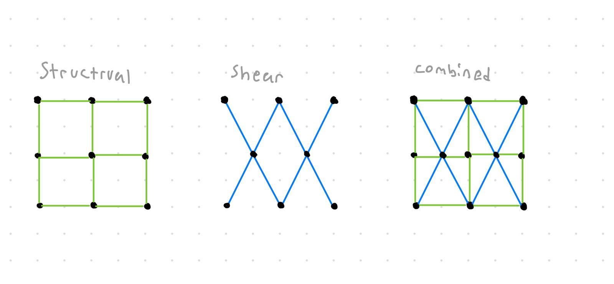
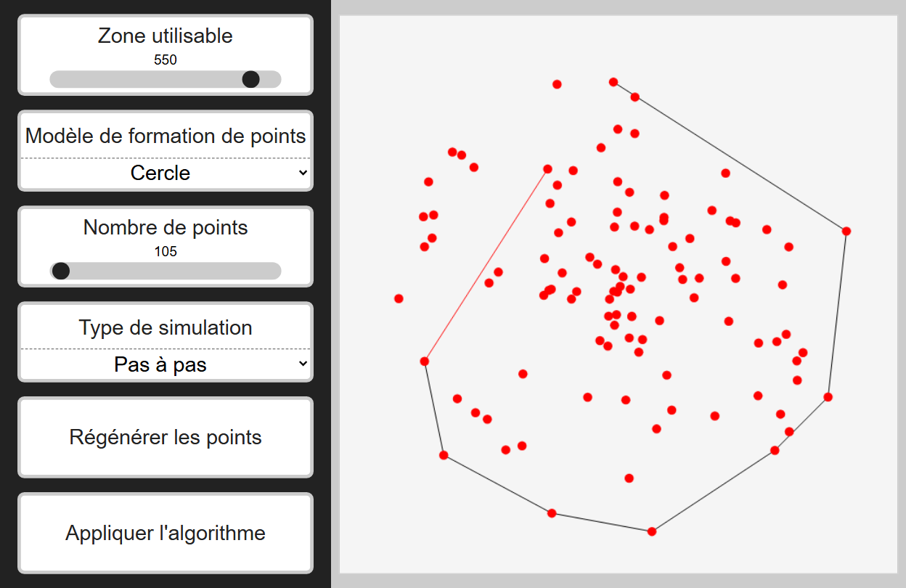
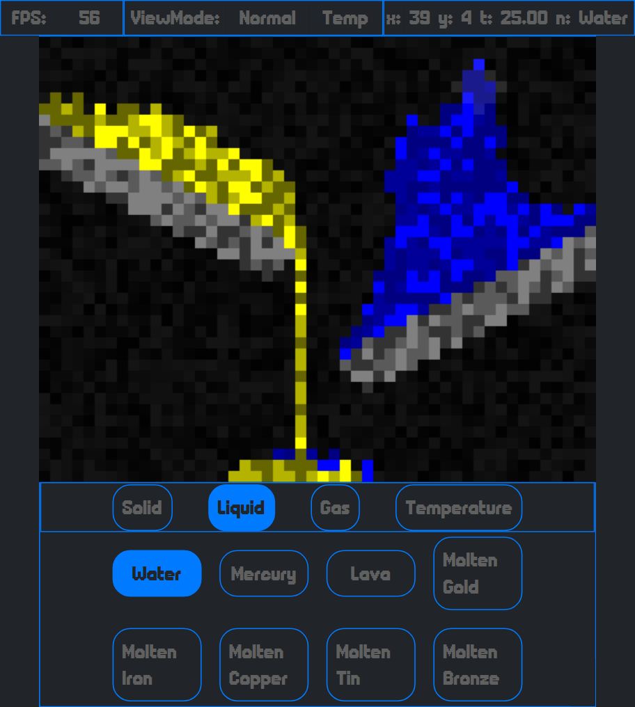

Hi, I'm Ozan. I'm studying BSc Game Design at the University of Liverpool, with a focus on programming. I enjoy building gameplay systems, experimenting with simulations, and making software that solves practical problems.
I'm interested in how the systems behind a game fit together: player controls, combat, enemy behaviour, and the tools that make them easier to build. I like taking an idea from a small experiment to something I can play with and improve.
My work also reaches beyond games, from scheduling applications to interactive data maps and Arduino prototypes. I enjoy the mix of code, electronics and 3D design, especially when I can build something useful for other people.
I'm looking for graduate opportunities in game programming and software development. I expect to complete my degree in June 2027.
Programming
C#, C++, Java, Python, JavaScript, HTML and CSS
Games and interactive work
Unity, Unreal Engine, GameMaker, FMOD and Blender
Applications and tools
React, Electron, FastAPI, SQL, Git and Arduino
Selected projects
Current work, university projects and personal builds. Open each project for the systems I worked on and the scope of my contribution.
Showing 12 projects
No projects in this category.
In development2026 - present
First-person horror game
A final-year Unity project built by a five-person team. I'm responsible for programming the gameplay systems that connect exploration, combat and enemy encounters.
My role: gameplay programmer
C#UnityFMODUnity Version Control
Gameplay systems and contribution
Modular weapons with configurable definitions, hitscan damage, ammunition, reload timing, recoil, aiming and weapon switching.
First-person movement with sprint and stamina, crouching, jump buffering, plus inventory and interaction prompts.
NavMesh enemies with patrol, chase and attack behaviour, alongside hearing and investigation triggered by noise events.
FMOD integration to connect game events to the team's audio work.
The other team members cover environment design, narrative, modelling and sound. The game is still in development; no public build is available yet.
Solo coursework2026
Circuit racing game
For my COMP222 assignment, I built a Unity game where you race AI drivers around a circuit. I designed the track by moving control points in the editor. Each edit reshapes the road and updates the route the other cars follow.
C#UnityBlender
The generated circuit and its checkpoints in Unity's Scene view.Track generation, car handling and AI
A Catmull–Rom spline defines the centre of the circuit. My generator builds the road mesh along that curve and adds barriers and bridge supports.
AI drivers look ahead to judge how sharply a corner turns, slow down for traffic and recover if they get stuck.
Surface grip and the handbrake affect how the player's car slides. The race manager times laps and checks that drivers pass the checkpoints in order.
Coursework prototype2026
Soft-body physics simulation
A Unity simulation exploring how deformable objects can be built from connected particles. I implemented the simulation and interaction tools to experiment with shape, stiffness and movement.
My role: simulation and tool programming
C#UnityVerlet integration
The shape editor shows how the particles connect inside each body.Simulation approach and design
Verlet integration, spring constraints and shape matching to simulate deformation and recovery.
Generated shapes and configurable connection patterns for testing different body structures.
Interactive manipulation, collision handling and bounding-box checks to narrow down collision candidates.
Custom editor controls and debug visualisation for inspecting the simulation.

Spring topology design sketch, showing the connections between particles.
Game prototype2026
Soft Body Tetris
I built this falling-block game on top of my soft-body simulator. You steer and rotate each falling piece with the mouse. The pieces bend on impact, so how they settle affects whether a row clears.
C#UnityVerlet integration
The board tracks settled pieces on a 10 × 20 grid.How line clears work with soft pieces
Each of the seven shapes is a soft body made of connected tiles. To detect a full row, the game checks which board cells those tiles overlap as the pieces deform.
If clearing a row cuts a piece in two, the game rebuilds each connected fragment as its own soft body. Both fragments can then fall and settle independently.
Internship prototype2025
Pharmacy appointment app & chatbot
A web application I developed during my NewMind AI internship, from the React frontend to the FastAPI backend. It combines appointment management with an embedded chatbot that retrieves information from medication leaflets.
My role: frontend and backend development
ReactPython / FastAPIPostgreSQLLangGraphQdrant
Application and chatbot systems
A React frontend for appointment workflows, doctor and service availability, role-specific views and the embedded chat interface.
A FastAPI backend with PostgreSQL storage and JWT authentication for access to the appointment system.
A chatbot embedded in the app, using Qdrant retrieval over medication leaflets, LangGraph workflows and custom MCP tools.
Structured chatbot responses for integration with the React chat interface.
This was an unpublished prototype. Booking appointments through the chatbot was planned but not completed; the implemented booking workflow belongs to the application itself.
Team project2025
Between the Pipes
An interactive map presenting water-quality samples collected across Istanbul. I built the data-presentation interface so visitors can explore sampling locations, measurements and spatial patterns.
The map interface with sampling points and a pH visualisation.Data visualisation and contribution
Selectable measurement layers and location popups for comparing the sample data.
Inverse-distance weighting to estimate values between samples, using nearby points.
A convex-hull boundary to keep the interpolated layer within the sampled area.
The wider team collected the samples; my contribution was the interactive presentation. The colour layer is an interpolation of that dataset, not live monitoring.
Game prototype2023
SB Rogue-Like
A top-down survival game prototype built with JavaScript and Electron, with enemy waves, combat and upgrade progression. I worked on the programming, collaborating with an artist on its pixel-art presentation.
Gameplay from the survival prototype.Combat and progression systems
Enemy spawning, waves and formations, with combat statistics and damage handling.
Experience and levelling, inventory, weapon upgrades and passive upgrades.
Debug commands for testing encounters and progression.
The game runs in Electron. A separate companion website was started for leaderboards and player accounts. Art was created by my collaborator, Zeynep.
Released mod2024
Minecraft: Item Frame Finder
A small Fabric mod I made for the Minecraft server I ran with friends. It helps locate items in a large storage system by finding and highlighting the item frames that contain them.
Players click Yes or No in chat to cast a vote. Anyone can check the running tally, and the player who started the poll can close it and share the final count.
The /enchantif command broadcasts a message in enchanting-table symbols. Clicking the message fills in /humanize so the recipient can read it in Latin letters.
Internship prototype2025
Arduino slot-machine prototype
A physical game prototype developed during my Sisal Teknoloji internship. The project combined Arduino game logic with a custom chassis and daughterboard PCBs.
My role: programming, chassis and PCB design
Arduino / C++ElectronicsCADPCB design
Software and hardware scope
Game logic connected to physical reels and an RGB LED display.
Chassis design to bring the mechanical and electronic parts together.
Daughterboard PCB design for the prototype's electronics.
This was a hardware prototype built during the internship.
Maths project2023
Convex hull visualiser
I built this visualiser to show how Graham scan finds the smallest convex polygon around a set of points. Run it step by step to see when a new point makes the scan backtrack and redraw the boundary.
The scan sorts points by angle around a starting point. As it visits each one, it removes earlier points that would turn the boundary inward. The animation highlights the edge currently being tested.
You can generate points inside a square, a circle or a set of clusters. Instant mode displays the finished hull, its area and perimeter, and the elapsed time.

One step of Graham scan on a set of 105 points.
Simulation prototype2023
Sandbox
I built a sandbox where you can paint materials onto a grid and see how they interact. Sand settles through water, and a heat brush lets you melt ice and turn the water into steam.
Each cell in the 50 × 40 grid holds a material. Density governs how neighbouring materials trade places. A thermal view colours the grid by temperature so you can follow heat spreading from cell to cell.
Some materials also react on contact. Lava touching water forms obsidian, while molten copper and tin combine to make bronze.

Stone ramps guide the materials. The palette below the grid has water selected.
Get in touch
Interested in my work or a graduate programming opportunity? You can reach me by email or on LinkedIn.